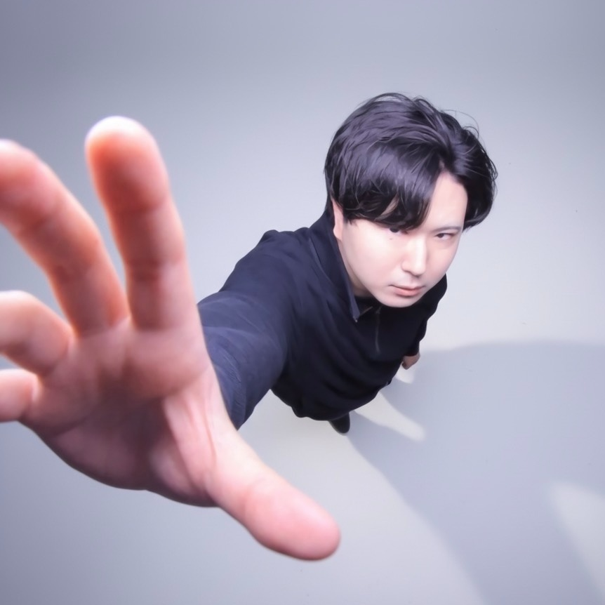

Norts
1999年5月1日生まれ。クリエイター /
プロデューサー。
楽曲・映像制作といったプレイヤーとしての活動に加え、レーベル「Oshiribeat」の運営を通じた企業タイアップのディレクションなど、制作の全工程をリードする。
グローバルな展開にも注力しており、韓国でのイベント主催や翻訳マネージメントなど、語学力を武器に海外現場での実務経験も豊富。制作・運営・言語の3軸で、多角的なプロジェクトをプロデュースしている。